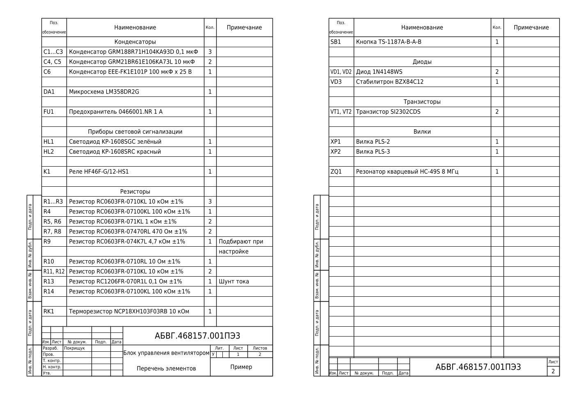

Automation and data
- Python
- Scripts
- Excel
- Google Sheets
Structured tables and data layouts that AI tools can pull from.
Junior AI Automation Specialist / Technical Drafter (AutoCAD)
Electronics graduate who turns repetitive work into automated workflows with Python and Claude, and delivers the hardware side as drawings and documentation written to standard.
I trained as an electronics engineer and graduated in 2026 from the Professional College of Information Systems and Technologies at Kyiv National Economic University. My diploma project was a complete design documentation set for an analog fan control device: schematics, PCB, assembly drawing, parts list and specification.
Alongside my studies I spent about two years as a freelance CAD drafter, delivering AutoCAD drawings and 3D models of simple parts for about 10 clients. At the college I built a student records and grading system with scripts and Excel, which is where automation became the thing I look for in every task.
Today I write Python tools and work with Claude regularly: structured prompts, the Claude API with structured outputs, and tables laid out so AI tools can read them. I am studying AI agents and learning Linux in parallel.
If a task comes back a second time, it gets a script, a table or a tool. The student records system started exactly that way.
In my Vacancy Analyzer the Claude API only pulls structured data. The decision is made by deterministic, unit-tested Python.
Drawings and design documents follow ESKD and DSTU, so another engineer can pick them up without me in the room.
Structured tables and data layouts that AI tools can pull from.
Validation, database access and business rules kept in separate layers.
Currently studying AI agents.
Structural diagram of the signal path, simplified.
An external NTC thermistor and R1 form a divider whose voltage follows the temperature. The trimmer R2 sets the reference voltage, which is the switch-on temperature. When the sensed voltage passes the reference, the LM358 output goes high and opens the SI2302 MOSFET through R3. The MOSFET closes the fan circuit on the ground side, and the red LED shows that the fan is running. A 4.7 V zener limits the gate voltage and a 1N4007 diode absorbs the voltage spike from the motor winding at switch-off.
| # | Block | Parts | Function |
|---|---|---|---|
| 1 | Power and filtering | X1, C1, C2, C3 | Takes 5–12 V DC and feeds the VCC rail |
| 2 | Temperature sensor | X2, R1 + NTC | Sense voltage to the IN+ input |
| 3 | Threshold setter | R5, R2 | Reference voltage to the IN− input |
| 4 | Comparator | DA1 | On / off control signal |
| 5 | Drive and indication | R3, VD2, VT1, VD3, R4 | Gate voltage for the switch, status LED |
| 6 | Fan switching | X3, VD1 | Switches the fan on the ground side, protects the MOSFET |
Two remarks from the external review that I agree with. The second channel of the LM358 is unused and could buffer the thermistor signal or serve as a second threshold with emergency shutdown. The explanatory note would also benefit from an analytical estimate of the temperature hysteresis.
python -m eskd_bom build schematic.dxf \
-o parts_list.dxf \
--code "АБВГ.468157.001ПЭ3" \
--title "Блок управления вентилятором" \
--preview parts_list.png
curl -X POST localhost:8000/applications \
-H "content-type: application/json" \
-d '{"company": "Acme", "position": "CAD Specialist",
"source": "Djinni", "applied_on": "2026-10-20"}'
{"company": "Acme", "position": "CAD Specialist",
"source": "Djinni", "applied_on": "2026-10-20",
"id": 1, "status": "applied"}python -m analyzer examples/posting.txt \
--profile examples/profile.json
Junior CAD Drafter (Electrical)
Seniority: Junior | Remote: yes | Salary: $700–900
Match score: 50%
Have: AutoCAD, English
Missing: Revit, Electrical Schematics
Bonus: Python
Warnings:
- Unpaid test task of 4-6 hourspython demo.py
100n 0603 x1 C2
10k 0805 x2 R1 R2
10u 0805 x1 C1
330 0805 x1 R3
LED red 0805 x1 D1
NE555 SOIC-8 x1 U1
Cost per board: 0.60
Cost for 100 boards: 60.00
Saved bom.csvFreelance
Delivered AutoCAD drawings and 3D models of simple parts for about 10 clients.
VSP FKISIT KNEU
Built a student records and grading system with scripts and Excel to systematize data and simplify access to academic statistics.
Specialty 171. Professional College of Information Systems and Technologies (FKISIT), Kyiv National Economic University named after Vadym Hetman
Have a routine to automate or a part to draw?
I am open to remote part-time work, freelance tasks and junior roles in AI automation, Python and CAD drafting. Write to me and I will reply with how I would approach it.